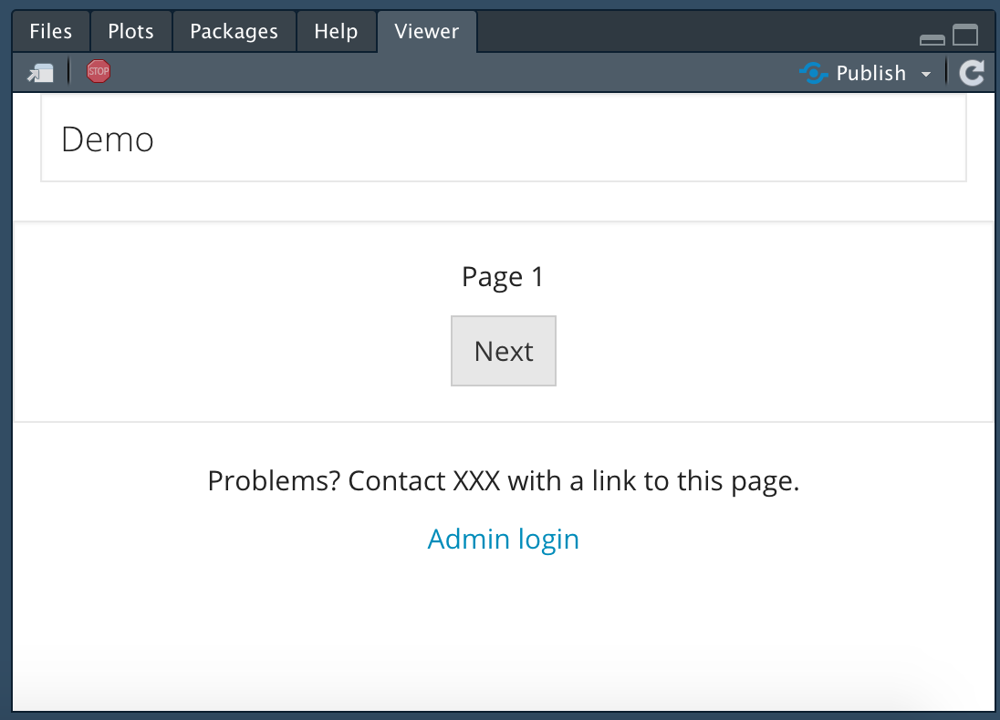

About
psychTestR is an R package for developing and administering behavioural experiments. This vignette provides a first introduction to psychTestR; by the end, you should feel ready to create a simple psychTestR test of your own. This introduction assumes that the reader is already moderately familiar with the programming language R. It also assumes that the reader has installed psychTestR (see https://pmcharrison.github.io/psychTestR/ for instructions) and loaded it using the following command:
Architecture
psychTestR builds on the web application framework Shiny. Shiny is a powerful open-source framework that is supported by RStudio, Inc.. The Shiny framework was designed to allow users to construct interactive dashboards in R that could easily be deployed to remote servers. psychTestR specialises Shiny to the application of psychological experiment design, providing a straightforward way to design linear sequences of test pages that elicit and record responses from the participant.
Like Shiny, psychTestR uses the htmltools package to programmatically generate HTML code from R code. This package allows the user to design complex HTML interfaces by composing R functions. htmltools functions can be used directly within psychTestR to construct highly customisable test interfaces.
Like all Shiny apps, psychTestR tests are hosted on a server running R code. These tests can be hosted locally from one’s own computer, which is useful both for test development and for conducting in-person data collection. Tests can also be deployed to remote servers for online data collection without changing any of the underlying R code – see Hosting experiments online for details.
Pages
The most essential unit of a psychTestR test is the page.
Pages display content to the user and optionally collect responses. The
most flexible way of creating psychTestR pages is with the
page function. However, psychTestR also provides many
helper functions for creating particular types of pages, which can often
be useful for saving legwork and increasing readability. For example,
the function one_button_page defines a page that displays a
prompt to the user and provides a single button with which the user may
advance to the next page. The below code defines a page that displays
“Welcome to the test!” and a “Next” button:
one_button_page("Welcome to the test!")If you run this code in RStudio, it should display the test element in your Viewer window:

Here the prompt took the form of raw text, without any HTML
specifications. We can use the htmltools package to create
such specifications, for example:
library(htmltools)
one_button_page(
div(
p("An example of ", tags$strong("bold"), "text;"),
p("An example of ", tags$em("italic"), "text.")
)
)
This page doesn’t collect any information from the participant. An
example of a page that does collect information is the N-alternative
forced choice page, as created by the NAFC_page
function. This function allows the user to specify several choices to
the user which will be displayed as clickable buttons. The participant
must click one of these buttons to advance to the next page, and their
choice will be automatically recorded.

psychTestR contains various built-in page types like these, for example:
text_input_pageaudio_NAFC_pagevideo_NAFC_pagedropdown_NAFC_pageslider_pagefinal_page
See the function-level
documentation (accessible at the R console with
e.g. ?text_input_page) for more details.
Tests should generally conclude with a final page, as
produced by final_page: these final pages have no buttons
to advance to the next page, and so provide a good way to end the
test.
You can also define custom page types using the general-purpose
page function. In our experience, it’s useful to use the
source code of pre-existing page types as templates for defining custom
page types. If you think that your page type might be useful to other
psychTestR users, you may consider wrapping it as a function and
submitting it as a pull request to the psychTestR
repository, so that it can be incorporated into the psychTestR
codebase.
Timelines
A psychTestR test comprises a sequence of test elements, termed a timeline. There are three main types of test elements:
- Pages;
- Reactive pages;
- Code blocks.
We will get to reactive pages and code blocks in due course. First,
we’ll construct a timeline comprising solely pages. A timeline may be
constructed using the join function from psychTestR:
timeline <- join(
one_button_page("Page 1"),
one_button_page("Page 2"),
final_page("The end")
)The join function is similar to the c
function in base R: it joins any combination of test elements, lists of
test elements, and timelines, and returns a ‘flat’ (i.e. non-nested)
timeline:
t1 <- join(
one_button_page("Page 1"),
one_button_page("Page 2")
)
t2 <- join(
one_button_page("Page 3"),
one_button_page("Page 4")
)
join(t1, t2, final_page("End"))Timelines without internationalisation are represented as lists, which you can manipulate using standard functions from base R. Internationalised timelines are more complicated, but we’ll get to that later.
Note that we concluded the timeline with the final_page
function. A final page is like a one-button page, but
without a button to advance to the next page.
final_page("The end")
We can run the resulting test as follows:
timeline <- join(
one_button_page("Page 1"),
one_button_page("Page 2"),
final_page("The end")
)
test <- make_test(elts = timeline)
shiny::runApp(test)As you can see, the function make_test takes the input
timeline and turns it into a Shiny app object that can then be run with
. See ?make_test for more details.
The resulting test should display in your RStudio Viewer window, or in your web browser, depending on your RStudio configuration.

This test doesn’t collect any data. Let’s define another test that does collect data:
timeline <- join(
NAFC_page("favourite_colour",
"What is your favourite colour?",
c("Red", "Green", "Blue")),
elt_save_results_to_disk(complete = TRUE),
final_page("Thanks for completing the survey!")
)
test <- make_test(elts = timeline)
shiny::runApp(test)Note that we have introduced a new builder function,
elt_save_results_to_disk. This function doesn’t resolve to
a psychTestR page, but instead resolves to a so-called code block:
elt_save_results_to_disk(complete = TRUE)## psychTestR code block
## Function: function (state, opt, ...)
## {
## save_results_to_disk(complete, state, opt)
## }
## <bytecode: 0x555ed9022570>
## <environment: 0x555ed9022110>Code blocks don’t display anything to the user, but instead instruct
the server to run a specified function. This function can take several
inputs, but most important is the state object, which
stores information relevant to that particular participant’s testing
session, such as their responses to N-alternative forced choice pages.
This particular function takes the state object as input
and saves the participant’s results to disk, paying attention to certain
test configuration options as specified in opt.
Having run this test, we should see that it generates an RDS file in
the directory output/results. The name of this RDS file
will contain the participant’s ID, which by default is randomly
generated. RDS files provide compressed versions of R objects. We can
read our RDS file into R using the readRDS function. The
code below lists all files in the results directory with the extension
.rds, and reads the first one into R:
rds_files <- list.files("output/results",
pattern = "\\.rds$",
full.names = TRUE)
res <- readRDS(rds_files[1])
res## psychTestR results list (8 results in 2 sections)
## (visualise with as.list(), as_tibble(), or as.data.frame())We can visualise this results file with the as.list
function:
as.list(res)## $results
## $results$favourite_colour
## [1] "Green"
##
##
## $session
## $session$p_id
## [1] "30d7172ba11c543328b528dfc5df5edd8b994607578eb03547e4b4a01d3e81f5"
##
## $session$pilot
## [1] FALSE
##
## $session$complete
## [1] TRUE
##
## $session$time_started
## [1] "2019-09-26 08:31:46 UTC"
##
## $session$current_time
## [1] "2019-09-26 08:31:47 UTC"
##
## $session$num_restarts
## [1] 0
##
## $session$language
## [1] "EN"We see that my favourite colour is green. We can also coerce the
results file to a tabular format using the as_tibble or
as.data.frame functions:
as_tibble(res)## # A tibble: 1 × 8
## session.p_id session.pilot session.complete session.time_started
## <chr> <lgl> <lgl> <dttm>
## 1 30d7172ba11c543328b528dfc… FALSE TRUE 2019-09-26 08:31:46
## # ℹ 4 more variables: session.current_time <dttm>, session.num_restarts <int>,
## # session.language <chr>, results.favourite_colour <chr>Build time versus test time
At this point it’s worth explaining the difference between build
time and test time. Build time corresponds to the moment
when you create a timeline of test elements and pass it to
make_test. psychTestR takes all of your builder functions,
such as NAFC_page and one_button_page, and
evaluates them to produce a series of test elements, where an individual
test element looks like this under the hood:
## $ui
## <div>
## <p>What is your favourite colour?</p>
## <div id="response_ui" style="visibility: inherit">
## <p>
## <button id="Red" type="button" class="btn btn-default action-button" onclick="trigger_button(this.id);" disabled="TRUE" style="">Red</button>
## <script>setTimeout(function() {
## document.getElementById('Red').disabled = false;
## }, 0);</script>
## </p>
## <p>
## <button id="Green" type="button" class="btn btn-default action-button" onclick="trigger_button(this.id);" disabled="TRUE" style="">Green</button>
## <script>setTimeout(function() {
## document.getElementById('Green').disabled = false;
## }, 0);</script>
## </p>
## <p>
## <button id="Blue" type="button" class="btn btn-default action-button" onclick="trigger_button(this.id);" disabled="TRUE" style="">Blue</button>
## <script>setTimeout(function() {
## document.getElementById('Blue').disabled = false;
## }, 0);</script>
## </p>
## </div>
## </div>
##
## $admin_ui
## NULL
##
## $label
## [1] "favourite_colour"
##
## $final
## [1] FALSE
##
## $get_answer
## function (input, ...)
## input$last_btn_pressed
## <bytecode: 0x555ed75a25b0>
## <environment: 0x555ed75a1b68>
##
## $save_answer
## [1] TRUE
##
## $validate
## function (answer, ...)
## !is.null(answer)
## <bytecode: 0x555ed75a23f0>
## <environment: 0x555ed75a1b68>
##
## $on_complete
## NULL
##
## $i18n_dict
## NULL
##
## $next_elt
## [1] TRUEpsychTestR can then refer to these resolved test elements when
administering them to participants, instead of running the builder
functions (e.g. NAFC_page) from scratch each time.
While build time happens before any participants take the test, test time refers to the participant’s testing session itself. Test time code is useful for things like saving the participant’s results, defining test elements that depend on the participant’s actions, and randomising stimulus administration.
Readers who have written Shiny apps may have written server files that look something like this:
library(shiny)
# Run once on app launch
data <- read.csv("data.csv")[, 2]
# Run separately for each user
shinyServer(function(input, output) {
output$distPlot <- renderPlot({
bins <- seq(min(data), max(data), length.out = input$bins + 1)
hist(data, breaks = bins, col = 'darkgray', border = 'white')
})
})In this example, the function within shinyServer is
called separately for each app user, creating an isolated workspace that
stores variables specific to that user’s session. This corresponds to
our ‘run-time code’ in psychTestR.
However, the code example also contains a call to
read.csv prior to the shinyServer function, in
order to create the data object. This call only happens
once, on app launch, and creates an R object that is shared by all users
sessions. This corresponds to our ‘build-time code’ in psychTestR.
This distinction between build-time code and run-time code is part of what makes Shiny and hence psychTestR able to efficiently scale to many concurrent users. Objects that are the same for all participants may be defined in build-time code, and this object need only be stored once in memory. Objects that are specific to individual participants are then stored in run-time code.
Most psychTestR users never have to interact with the
shinyServer function directly. Instead, run-time code is
defined as part of the three main types of test elements: code blocks,
simple pages, and reactive pages. This run-time code depends heavily on
the notion of session state, which will now be introduced.
Session states
Each participant has a so-called ‘session state’, which characterises
their current position in the test as well as any results or other
variables that have accumulated along the way. By default, session
states are saved to disk in the directory
output/sessions.1 Session states are identifed by the
corresponding participant IDs; each participant ID may be associated
with no more than one session state.
The primary role of session states in test development is for storing and accessing variables that are specific to the particular participant’s testing session. For example, we might define a counter corresponding to the number of correct responses so far. These variables are termed session variables.
There are two types of session variables: global variables
and local variables. Each variable is identifed by a
key that simply corresponds to a character string, such as
"counter" or "start_time". Values may be
assigned to these variables using the function set_global
(for global variables) or the function set_local (for local
variables). Values may be retrieved from these variables using the
functions get_global and get_local.
Global variables and local variables differ in their scope.
Global variables persist for an entire testing session, and are
accessible to all run-time code. No more than one global variable can be
defined for a given key. Local variables, meanwhile, only persist for
the duration of a module. A module is a self-contained unit of
psychTestR test elements that uses an isolated set of local variables;
modules can be created using the functions begin_module and
end_module. Local variables are deleted upon termination of
a module. It is also possible to nest modules; each nested module will
have its own set of local variables, potentially with variable keys
being duplicated across modules. Run-time code will only have access to
the lowest-level module at that point in the test’s timeline.
Manipulating session variables requires run-time code. As mentioned previously, run-time code can be created for each of the three main types of test elements: code blocks, simple pages, and reactive pages. We will now consider each approach in turn.
Code blocks
A code block is a test element that solely comprises run-time code
and does not contain a user interface component. Code blocks may be
created with the code_block function. The primary argument
to code_block is fun, an R function that will
be called at run time. This R function will typically take two
arguments: state and .... The
state argument represents the session state, whereas the
... argument captures further optional arguments that will
not be covered here.
Within the code block function, we can access and set session
variables using the four functions introduced above:
set_global, set_local,
get_global, and get_local. These functions
each require the state object to be provided as an
input.
Here is an example of a code block that stores the time when the run-time code was executed:
code_block(fun = function(state, ...) {
set_global(key = "time_started",
value = Sys.time(),
state = state)
})Here the argument determines the name of the global variable; the argument determines the value that is assigned to the variable; is the state object we’ve seen before.
We could then refer to this variable later in the test to compute the total time taken, as in the following example:
save_time_started <- code_block(function(state, ...) {
set_global(key = "time_started",
value = Sys.time(),
state = state)
})
compute_time_taken <- code_block(function(state, ...) {
time_taken <- Sys.time() - get_global("time_started", state)
msg <- paste0("Time taken: ", format(time_taken, digits = 3))
shiny::showNotification(msg)
})
make_test(
join(
save_time_started,
one_button_page("Continue when you're ready."),
compute_time_taken,
final_page("End")
))Reactive pages
Reactive pages are pages that are created by run-time code. This is useful when you wish to present the user with randomised stimuli or other information that is only available at run time.
Reactive pages are defined using the reactive_page
function. Like code blocks, the primary argument to this function is the
argument fun, taking the form of an R function that must
accept the argument ‘...’. At run-time, this function will
be called with several input arguments, including most importantly:
-
state, corresponding to the participant’s session state object; -
answer, corresponding to the participant’s most recent response.
The reactive page function must return a test page, which will be displayed to the participant at the appropriate point in the test.
The psychTestR specification requires reactive page functions to be idempotent, meaning that calling it multiple times should have the same effect as calling the function once. Reactive pages are therefore not the right place to write code that has side effects, like incrementing counters or saving results.
Here is an example test with a reactive page that displays the current time:
make_test(join(
reactive_page(function(...) {
msg <- format(Sys.time(), "The current time is %H:%M:%S.")
final_page(msg)
})
))Note that the time updates if you refresh the page.
Here is a second example demonstrating the use of the
answer argument:
make_test(join(
NAFC_page("q1", "What is your favourite colour?",
c("Red", "Green", "Blue")),
reactive_page(function(answer, ...) {
msg <- sprintf("Your favourite colour is %s.", answer)
final_page(msg)
})
))Simple pages and run-time code
Often it is useful to associate run-time code with a simple page. The
documentation for simple pages (?page) outlines various
ways of achieving this through different function arguments. In
particular, the following arguments involve run-time code:
get_answer
This is an optional function for extracting the participant’s answer
from the current page. This function should accept an argument termed
input, which provides access to any input elements that
have been defined as part of the page UI. For example, the UI for
text_input_page includes a text-box input defined as
follows:
shiny::textInput("text_input",
label = NULL,
placeholder = placeholder,
width = width)The first argument to shiny::textInput determines the
input slot that will be used to access the value in the text box.
Correspondingly, the get_answer argument is defined simply
as follows:
get_answer = function(input, ...) input$text_inputIt is possible to define more complex get_answer
functions that perform arbitrary post-processing on the user input, for
example by converting text strings to numbers, deleting whitespace, and
so on.
validate
validate is an optional function that checks whether the
participant has returned a satisfactory response for the current page.
It should return TRUE for a successful validation; for an
unsuccessful validation, it should return either FALSE or
an error message, expressed as a character string. If validation fails
then the page will be refreshed, usually to give the user a chance to
revise their input. The following code provides a simple example:
make_test(
join(
text_input_page("example",
"What is 1 + 1?",
validate = function(answer, ...) {
res <- suppressWarnings(as.numeric(answer))
if (!is.na(res) && res == 2) TRUE else "Try again!"
}),
final_page("End.")
)
)
on_complete
on_complete is an optional function that is run once the
page is completed and all validation checks have passed successfully.
The below example shows a pop-up notification with the current time.
make_test(
join(
one_button_page("Hello!", on_complete = function(...) {
shiny::showNotification(paste0("The current time is ", Sys.time(), "."))
}),
final_page("End.")
)
)Results
It is typically useful to save some or all of the participant’s responses in a persistent form. This can be achieved in a fully customisable manner using combinations of session variables and run-time code. However, psychTestR also provides a built-in result management system that works well for many practical applications.
This system works as follows. Pages with response options have an
associated get_answer function that extracts the
participant’s answer from the user interface. If the
save_answer option is enabled for a given page, then this
answer will be automatically appended to the participant’s results
store, with the result’s label corresponding to the page’s
label slot. The results store may optionally be organised
into sections, where each section typically corresponds to a test
module. For example, a results store might look like this:
- Demographics
- Gender
- Age
- Personality
- Openness
- Extraversion
- …
- Admin
- Preferred payment type
- Payment code
At any one point in time, only one results section will be active.
Saved results will be automatically appended to the active result
section. A new results section may be started by calling the function
register_next_results_section. This function is
automatically called at the beginning of a new module.
Where relevant, prebuilt page types (e.g. NAFC_page,
text_input_page) typically come with automatic results
saving. This automatic saving may be disabled by setting
save_answer = FALSE.
It is straightforward to implement automatic results saving for new
page types. All that is required is to implement a
get_answer function (see ?page), which shows
how to extract the participant’s answer from the user interface, and
then save save_answer to TRUE. See the source
code for prebuilt page types, for example text_input_page,
for examples.
The participant’s results will not be saved to disk without an
explicit command. The easiest way to achieve this is with the function
elt_save_results_to_disk; this defines a code block that
saves the participant’s current results to the
output/results directory. This function may be called
multiple times in the test so as to keep an incrementally updated record
of the participant’s progress. Intermediate results should be saved with
the argument complete = FALSE; finalised results should be
saved with complete = TRUE.
Results may then be read into R using the readRDS
command. This produces a psychTestR results object which
can be explored with various commands:
-
as.list- converts the object to a list, a format which closely resembles the original object’s data structure. -
as.data.frame- attempts to convert the object to a one-row data frame. This can be useful for combining multiple participants’ data into a tabular format. However, the function is experimental and might given unexpected results if the original results take unusual data structures. -
as_tibble- likeas.data.framebut produces atibbleversion of a data frame.
Sometimes it is useful to save results that are not directly returned from a test page, but instead computed by a code block. For example, suppose we wanted to evaluate someone’s general liking for cheese on a scale from 1–7, by averaging ratings that they provide for three individual cheeses. We could construct the following test:
cheeses <- c("Cheddar", "Brie", "Camembert")
items <- purrr::map(cheeses, function(cheese) {
NAFC_page(
label = cheese,
prompt = paste0("How much do you like ", cheese, "?"),
choices = as.character(1:4),
arrange_vertically = FALSE,
on_complete = function(answer, state, ...) {
set_local(cheese, as.numeric(answer), state)
}
)
})
save_res <- code_block(function(state, ...) {
scores <- purrr::map_dbl(cheeses, get_local, state)
save_result(place = state,
label = "cheese_liking",
value = mean(scores))
})
make_test(join(
items,
save_res,
elt_save_results_to_disk(complete = TRUE),
final_page("End")
))Some aside points about the code above:
- We created a list of items using the
purrr::mapfunction. This is a nice way of creating a collection of test elements that only vary along one particular parameter. Seepurrr::pmapfor a more powerful alternative. - The
save_rescode block refers to an external variable,cheeses. This is called a “closure”: the function “closes over” the external variable, and carries a permanent reference to it. This is a useful way to avoid copying constants. Be careful though: changes to this external variable after the definition of the code block will be propagated to that same code block. It’s best to restrict the use of closures to static variables. -
purrr::map_dblcreates a numeric vector where the ith element is the result of applying theget_localfunction to the ith element ofcheeses, withstateas a supplementary argument.
Having taken the test once, and reading the results from disk, we get something like this:
## $Cheddar
## [1] "4"
##
## $Brie
## [1] "3"
##
## $Camembert
## [1] "4"
##
## $cheese_liking
## [1] 3.666667So, we’ve successfully created a new result termed
"cheese_liking" corresponding to the mean score for the
three cheeses.
Admin panel
The admin panel provides an interface to the “back end” of the testing environment. Ths is particularly useful for online testing. By default, the testing interface contains a link at the bottom of the screen labelled “Admin login”:
Clicking this link launches a login screen, where you are prompted to
enter your password. This password should be provided as part of the
opt argument to make_test; the default
password is “demo”.
This activates a range of admin controls at the bottom of the screen.

These admin controls provide access to various functionalities.
Downloading results
Results can be downloaded either as RDS or CSV files. CSV files are
derived by applying the as.data.frame function to the
participants’ results objects, and should comprise one row per
participant.
Piloting
It is possible to switch the test between ‘pilot’ and ‘live’ modes. These two modes behave exactly the same, except pilot participants do not contribute to participation statistics, and pilot participants are marked as such in their results files. Mode switching persists across multiple sessions and multiple test launches; it currently works by writing a file to the working directory.
Availability
This feature allows the researcher to close the test to new participants via the admin panel. This is mainly useful for online studies. Like the piloting control, this command persists across multiple sessions and multiple test launches by writing to the working directory.
Statistics
This button launches another panel that summarises participation statistics for the current test, including numbers of partial and completed sessions as well as mean completion times.

Custom admin panel components
It is also possible to construct custom admin panel components using
the custom_admin_panel component of make_test.
This process is a bit complicated and will not be covered here - see
instead ?make_test.
Internationalisation
It is sometimes useful to construct psychTestR tests that support
multiple languages. The first step in creating such a test is to define
a dictionary. A dictionary comprises a collection of
keys, e.g. “welcome_message” or “correct_feedback”, with each
of these keys being associated with one or more translations in various
languages. For example, the key "colour" might return
“What’s your favourite colour?” if the language is English, or “Quelle
est ta couleur préférée?” if the language is French.
psychTestR dictionaries are created as instantiations of the R6 class
i18n_dict. A dictionary may be created by calling the
$new() method with a data frame as the first argument,
where the data frame satisfies the following properties:
- Each row corresponds to a term to be translated.
- There is a character column entitled
keythat defines the key for each term. - The remaining columns provide translations into different languages, with the languages being identified by the column names, according to ISO 639-2 conventions.
By default the text is parsed according to Markdown conventions, with
one addition: two successive backslashes (written \ in a
text file, or \\ in R) are interpreted as a new paragraph.
This behaviour can be disabled by calling the $new() method
with markdown = FALSE.
Let’s define a simple dictionary:
df <- data.frame(key = c("name", "hello", "bye"),
en = c("Peter", "Hello", "Goodbye"),
fr = c("Pierre", "Bonjour", "Au revoir"))
df## key en fr
## 1 name Peter Pierre
## 2 hello Hello Bonjour
## 3 bye Goodbye Au revoir
dict <- i18n_dict$new(df)Whenever we want to include internationalised text in our test
elements, we use the i18n function with the appropriate key
as its first argument. For example, to translate a name using the above
dictionary, we would write i18n("Peter"). However, it is
not possible to call i18n("Peter") by itself, because the
function will not know what dictionary to use or what language to
translate to. Instead, i18n must be wrapped somewhere
inside a call to new_timeline. This
new_timeline is a macro that takes two primary arguments –
an expression that evaluates to a list of test elements (e.g. as created
by join), and a dictionary – and evaluates the expression
multiple times, once for each language in the dictionary, translating
calls to i18n into the relevant languages.
The resulting timeline object comprises one list of test elements for
each available language. This timeline object can be passed to
make_test to produce an internationalised test.
Note that previously we just passed make_test a list of
test elements. In this case, the function internally coerces this list
into a one-language timeline object, assuming that these test elements
all correspond to the same language. We could have equally passed
make_test a timeline created by new_timeline
without any calls to i18n.
Here is a straightforward example that uses the dictionary defined above:
timeline <- new_timeline(
join(
one_button_page(paste0(i18n("hello"), " ", i18n("name"))),
final_page(i18n("bye"))
),
dict = dict
)The following code should launch the test in English:
make_test(timeline, opt = demo_options(languages = "en"))The following code should launch it in French:
make_test(timeline, opt = demo_options(languages = "fr"))For a more involved example, see Creating an internationalised questionnaire.
Best practice in test construction
Several best-practice programming principles apply equally well to psychTestR:
- Avoid copying and pasting. If you find yourself using the same code twice, ask yourself whether the code can be better expressed as some kind of function (or similar) that can be called multiple times. Such code is typically easier to read and easier to maintain. These functions can span in scale from single page templates all the way to modules representing entire perceptual tests.
- Avoid long blocks of code. Long blocks of code are hard to read and maintain because they place greater demands on working memory. Where possible, try to break up long blocks of code into functions or other R objects that are defined separately.
- Separate data from code. Questionnaires are often most naturally expressed in some kind of tabular format. We recommend storing the textual content of such questionnaires in tabular format (CSV files, data frames, tibbles) and programmatically generating psychTestR content from these tables.
As mentioned previously, psychTestR includes various prebuilt test
components that can facilitate test construction
(e.g. one_button_page, NAFC_page,
text_input_page). However, particular tests will often
demand additional customisability over what is supported by these
prebuilt elements. In these cases, we recommend defining new page
builder functions with reference to psychTestR’s prebuilt functions, and
taking advantage of the way in which the htmltools and shiny packages
allow you to construct complex user interfaces through R code. This
process is more involved than simply using psychTestR builder functions,
but it allows for a huge flexibility in the kinds of pages that can be
administered.
Conclusion
This article has provided an overview of the core functionality of psychTestR. If you understand the principles described here, then you should be able to construct sophisticated behavioural experiments completely within the R programming language.
Two other sources of documentation should prove useful as you
progress with psychTestR. One is the function-level
documentation, which is also available from the R console using
commands such as ?while_loop. The other documentation
source is the collection of documentation articles hosted on the psychTestR
website.
If you are interested, you can inspect these session states in R using the
readRDSfunction. Note however that these objects are not documented and their structure is subject to change with future versions of psychTestR.↩︎